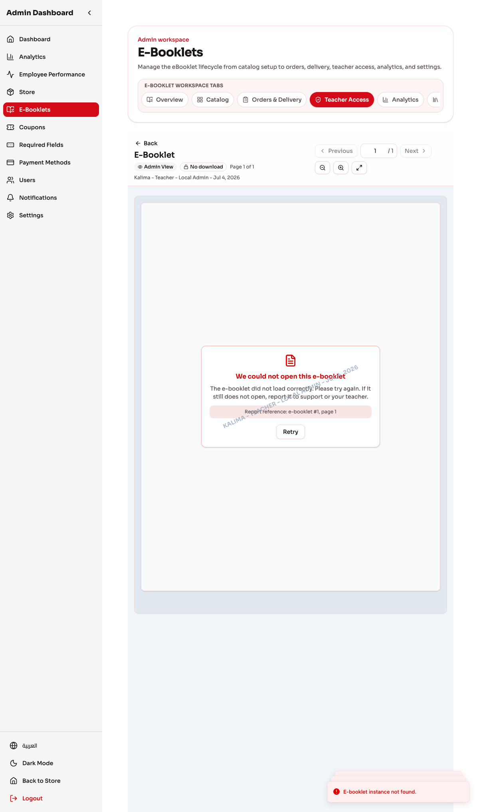
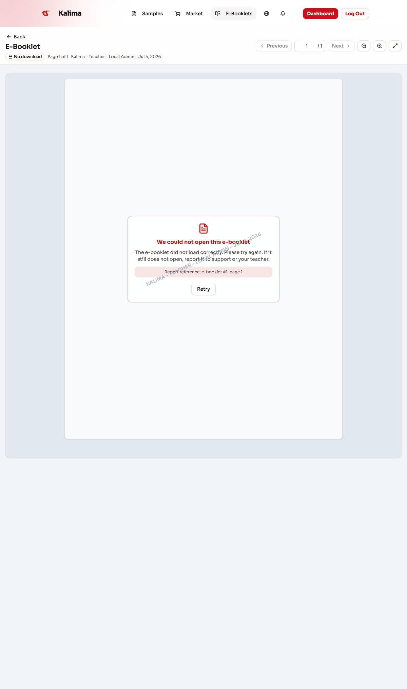
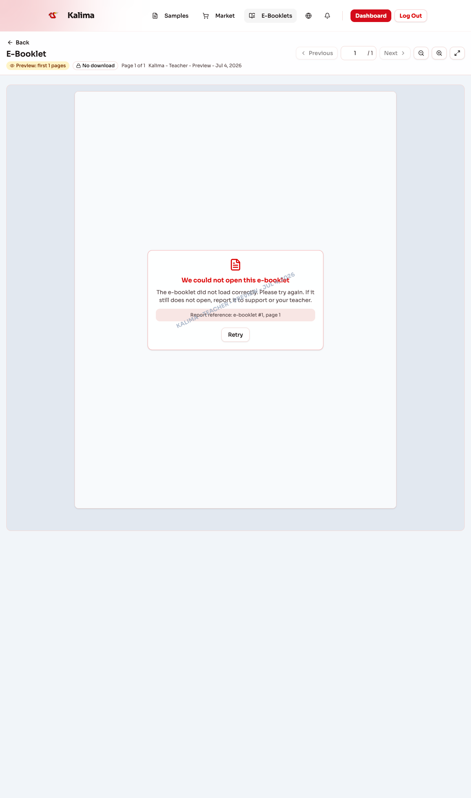

E-Booklet Viewer Page Number Control
Each screenshot shows the actual viewer toolbar with the page-number input between Previous and Next.




Local seed data has no real e-booklet instances, so the viewer body shows an e-booklet load error.
The toolbar is still the real shared viewer component and includes the page-number field.